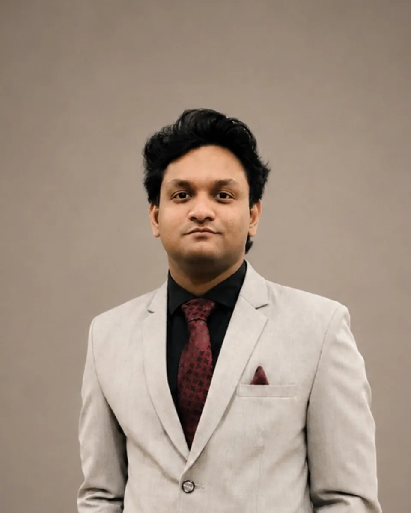

About
Usama Rafid
Where the Classroom, the Newsroom, and the Research Desk meet.
Usama Rafid is a journalist, lecturer, and researcher based in Dhaka. His work spans journalism, higher education, and media research.

Career Narrative
Usama Rafid grew up in Khulna and came to Dhaka to study, and stayed to work. He holds a BSS and MSS in Mass Communication and Journalism from the University of Dhaka, where he earned academic performance scholarships across multiple years, including the Tofazzol Hossain Scholarship for the highest CGPA in his freshman, sophomore, and junior years, and the Sitara Parvin Prize for outstanding results at the Bachelor's level.
He spent over five years at Roar Bangla writing and producing long-form explanatory content before moving into feature journalism at The Business Standard, where he reported on local communities, media economics, and the changing news landscape. He also co-founded Coastal Voices, a U.S. State Department-funded platform for climate and coastal community storytelling.
In parallel, he has worked as a researcher at the BRAC Institute of Governance and Development (BIGD), where he was selected for the Young Researchers' Fellowship in the Qualitative Research Stream, and at the Press Institute Bangladesh (PIB), where his work focused on information disorder and media analysis using OSINT techniques.
Today, Usama teaches at the University of Liberal Arts Bangladesh (ULAB), where he works with undergraduate and postgraduate students on journalism practice, media theory, environmental communication, and the history of Bangladeshi media. His research sits across journalism studies, media economics, and the sociology of news, with a particular interest in how journalism survives, adapts, and sometimes fails in Bangladesh and South Asia.
Parallel
Evolutions
A scrollable map of how Usama Rafid's academic formation and professional career developed side by side across newsrooms, research institutions, and the classroom, from 2016 to the present.
Drag or scroll horizontally to explore the full timeline tracks (2016 - 2026+)
Interactive Exploration
Click on any milestone block above to load the detailed history, core duties, and evolution profile of that specific role.
Role Title
Organization
Core Duties & Focus Areas
Acquired Skills
Curriculum Vitae
A complete record of academic qualifications, professional experience, publications, fellowships, and skills, available as a downloadable PDF.
Last updated: 2026 · For academic inquiries, write to usama.rafid@ulab.edu.bd